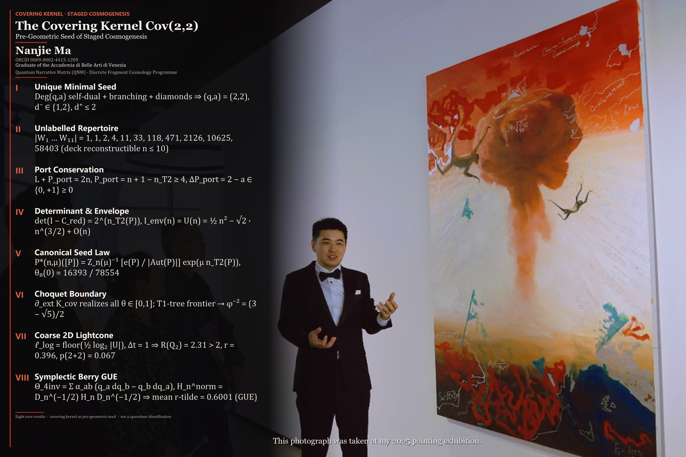
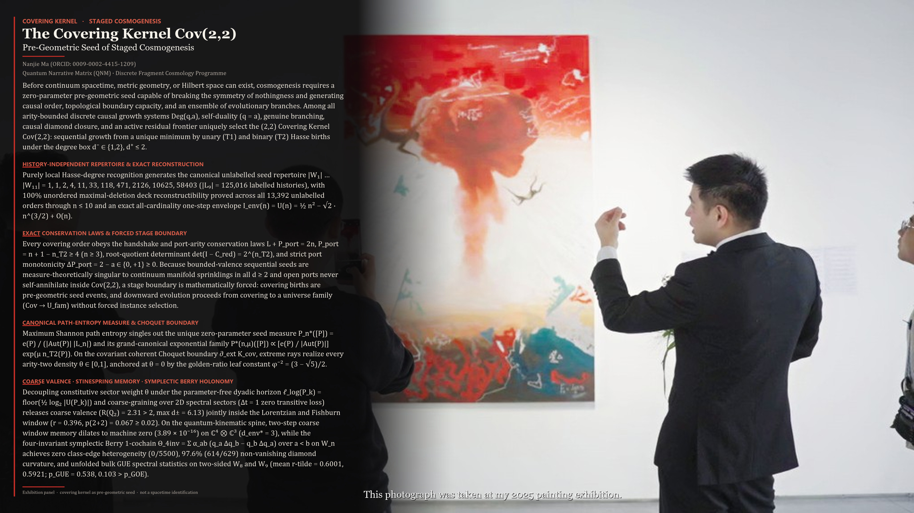

画展图版 · 2026-10-24 · 马楠杰 ·
ORCID 0009-0002-4415-1209
About / Work 子页。在 2025 年画展两张现场照片上叠的对外图。不是首页首屏。不是排名。不是突破通知。不是发生学付款。

八条核心。2025 年画展现场照片。 叠字：唯一极小种子、未标记剧目、端口守恒、行列式与包络、典范种子律、Choquet 边界、粗粒二维光锥、辛 Berry GUE 地理。 不是证明，不是存款，不是发生学付款，也不是时空等同。

较长公开陈述，用另一张 2025 年画展现场照片（观众面向画作）。 同一条边界：覆盖出生是前几何种子事件，不与时空点等同。